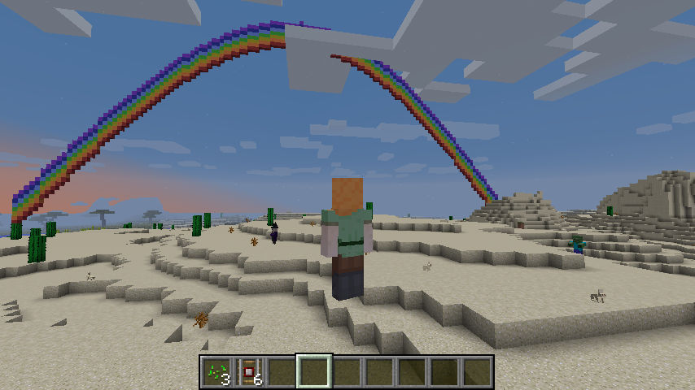

4 Building a rainbow
This is a very simple example of building a rainbow inspired by the RaspberryJuice.1 In this example, we’ll build a rainbow near current player and immediately watch the rainbow.
4.1 Build rainbow with R graphics
First, you’ll need to draw a rainbow with R Base plot system.
- Generate a rainbow data
- Prepare rainbow colors
- Draw a rainbow with R Base plot
It is possible to draw a rainbow with other R plot system like ggplot2.
# 1. Rainbow plot --------------------------------------------
## 1.1. Rainbow Data
x <- seq(1,128,1)
y <- sin((x / 128.0) * pi)
## 1.2. Rainbow Color
n <- 7
color <- rainbow(n, s = 1, v = 1, start = 0, end = max(1, n - 1)/n, alpha = 1)
## 1.3. Draw Rainbow with Base Plot System
plot(x, y, type="n", ylim = c(0,10))
for(i in 1:7) {
lines(x, y+i, col=color[i])
}4.2 Minecraft Rainbow
To build a rainbow on the Minecraft world, we will take the following steps;
- Get the current player position with
getPlayerPos()function. - Configure rainbow height, colors, and item.
- Build a rainbow referring to current player location and configured items.
- Finally, watch the rainbow a little far from the current player position.
## 2.1. Current Player Position
cur_pos <- getPlayerPos()
## 2.2. Rainbow Configuration
height <- 50
colors <- c(14, 1, 4, 5, 3, 11, 10)
blue_block <- find_item("Blue Wool")
## 2.3. Build a Rainbow
for (x in 1:128){
for (color in seq_along(colors)) {
y <- sin((x / 128.0) * pi) * height + color
setBlock(cur_pos[1] + x - 64, cur_pos[2] + y, cur_pos[3], blue_block[2], colors[color])
}
}
## 2.4. Watch a Rainbow
setPlayerPos(cur_pos[1], cur_pos[2], cur_pos[3]-50, tile=TRUE)The result looks like this:
